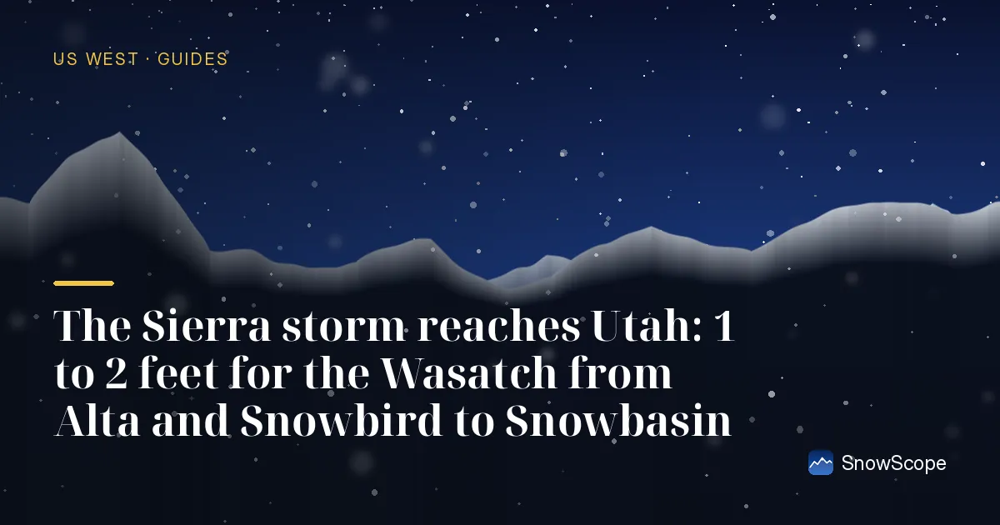
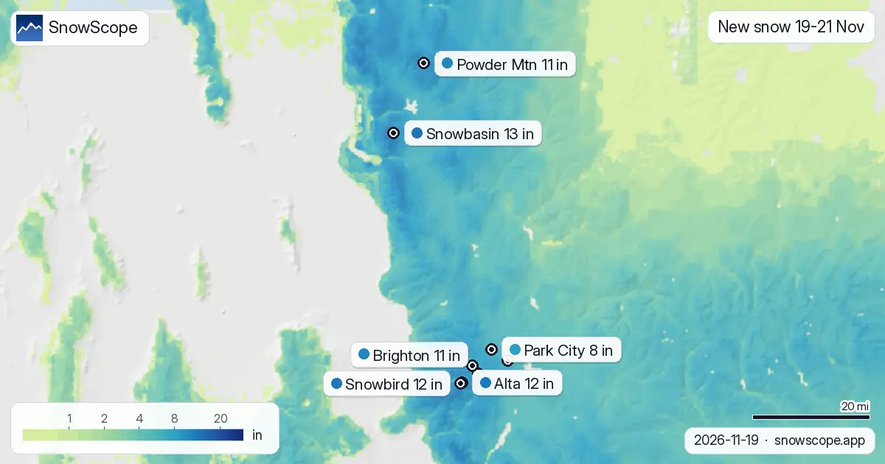

The Sierra storm reaches Utah: 1 to 2 feet for the Wasatch from Alta and Snowbird to Snowbasin
After burying the Sierra, the storm is crossing Nevada and reaching Utah in pieces from Thursday to Saturday, 19 to 21 November 2026. The National Weather Service has a Winter Weather Advisory for the Wasatch Mountains with 10 to 20 inches of snow, locally more in the upper Cottonwoods, and its forecasters say a general 1 to 2 feet looks right for the northern mountains. Unlike the Sierra, Utah starts from a roughly normal snowpack, so this storm turns an ordinary start into a good one.
See the live snow forecast for Alta in the SnowScope appSnow depth, powder alerts and the 3D map, free.
How the storm reaches Utah
The Salt Lake City office explains it like this: the low-pressure system that brought the atmospheric river to California is opening into a trough and crossing Utah in pieces. The first wave on Thursday comes in on southwest winds, with mild air and a snow level between 5,000 and 6,500 ft, which favours the northern Wasatch and the southern mountains. After a lull on Friday, a second wave on Friday evening turns the wind to the northwest, brings colder air and lowers the snow level to the valley floors, and that flow favours the central Wasatch, Little and Big Cottonwood Canyons.
By the time the moisture reaches Utah it has already dropped much of its water on the Sierra and the Nevada ranges, so totals are smaller. But Utah's snow is usually drier and lighter. The gauges show it: at Brighton, 10 inches of new snow held 1.1 inches of water, about 9 to 1, and at Mill-D North it was 12 to 1, compared with 4 to 9 to 1 at the Sierra gauges this week.

How much, resort by resort
Our snow maps give about 12 inches (30 cm) from Thursday to Saturday at the upper slopes of Alta and Snowbird, 11 inches (29 cm) at Brighton and Solitude, 13 inches (33 cm) at Snowbasin, 11 inches (28 cm) at Powder Mountain, and 8 inches at Park City and Deer Valley on the drier Wasatch Back. Friday, 20 November, is the snowiest day on our maps, with about 7 inches at Alta and 8 inches at Snowbasin.
The weather service is more generous: 10 to 20 inches for the Wasatch, 4 to 8 inches for the Park City area and the Ogden Valley, and even its lower-end forecast exceeds 20 inches locally on the Wasatch and the Bear River Range. Our numbers sit at the low end of that, so treat a foot as the likely amount and more as possible.
Where Utah's snowpack stands against past winters
Before this storm the gauges had already caught snow on Tuesday and Wednesday: between Tuesday and Thursday morning, Atwater above Alta went from 5 to 17 inches, the Snowbird gauge from 8 to 18 inches and Brighton from 1 to 11 inches. Even so, the water in the snowpack is only about normal: 100 % of the usual for the date at Snowbird, 62 % at Brighton, 76 % at Thaynes Canyon above Park City and 125 % at Little Bear in the Ogden Valley.
Our past-winters comparison says the same. At mid-mountain Alta has about 29 inches (73 cm), against a usual 18 inches on 19 November, and 12 of the past 46 winters were deeper. Brighton, Solitude and Park City are right at normal, about the middle of the 46 winters. The big early starts in Utah were 1984-85, with about 70 inches at Alta on this date, and 1996-97, with 59 inches. This is a decent start, not a historic one, which is exactly why this storm matters.
When to ski, and what to watch
Saturday morning, 21 November, after the colder second wave, should give the best snow in the Cottonwoods; Sunday 22 November looks dry on our maps. Expect winter driving on Friday morning and Saturday, especially in Little and Big Cottonwood Canyons, where traction rules and road closures for avalanche control are common in storms. Check the canyon road status before you go.
Thin early-season snow plus a storm on top is the setup avalanche forecasters watch most closely. Inside the resorts, terrain opens as patrol finishes its work; outside, read the Utah Avalanche Center forecast before going anywhere steep.
Plan the trip for the clear days
Our trip planner compares Snowbird, Park City and the other big western resorts on snow, lift ticket, places to stay and food for your dates and budget. We set it to Saturday 21 to Tuesday 24 November, three nights, the first days after the storm.
More maps (external sites)
References and credits
- National Weather Service: active winter storm warnings and advisories www.weather.gov/
- USDA NRCS SNOTEL: measured snow depth and snow water www.nrcs.usda.gov/resources/data-and-reports/snow-and-climate-monitoring-predictive-maps
- Avalanche.org: US avalanche forecasts avalanche.org/
About these numbers
New snow and snow on the ground at the resorts: SnowScope snow maps for 18-19 November 2026, upper slopes unless a height is given; Friday to Sunday are forecast. Past winters: the same date in each of the 46 winters since 1980-81, at the height given. Measured gauges: USDA NRCS SNOTEL, morning readings. Warnings and forecast discussions: National Weather Service, 19 November 2026.
Cite this report
For research, teaching or the press: the numbers and charts are free to reuse under CC BY 4.0 with this citation.
SnowScope (2026), The Sierra storm reaches Utah: 1 to 2 feet for the Wasatch from Alta and Snowbird to Snowbasin, https://snowscope.app/blog/en/2026/11/utah-wasatch-snowstorm-alta-snowbird-snowbasin-19-21-november-2026.html, accessed 2026-11-20
SnowScope (Atlas Labs). (2026, November 20). The Sierra storm reaches Utah: 1 to 2 feet for the Wasatch from Alta and Snowbird to Snowbasin. SnowScope snow reports. https://snowscope.app/blog/en/2026/11/utah-wasatch-snowstorm-alta-snowbird-snowbasin-19-21-november-2026.html
BibTeX
@misc{snowscope2026utahwasatchsnowstormalta,
author = {{SnowScope (Atlas Labs)}},
title = {The Sierra storm reaches Utah: 1 to 2 feet for the Wasatch from Alta and Snowbird to Snowbasin},
year = {2026},
month = nov,
howpublished = {\url{https://snowscope.app/blog/en/2026/11/utah-wasatch-snowstorm-alta-snowbird-snowbasin-19-21-november-2026.html}},
note = {Published 2026-11-21 10:18 UTC; accessed 2026-11-20}
}· CC BY 4.0 · Methods, data and tools →
Follow Alta
Free: a message when fresh snow is coming, and the forecast every morning.
More snow reports

Fresh snow across the US West has built depths well above normal. At Palisades Tahoe Alpine Meadows, upper slopes hold 75 cm (measured 2026-11-18), compared to 10 cm typical for mid-November.

Steamboat, Colorado, for families: what works for toddlers, school-age kids, teens and parents, with the snow of 46 past winters at three heights.

Heavenly, Sierra-at-Tahoe and Mt. Rose have more snow on 19 November than in any winter since 1980-81. How much fell, the measured gauges, the weather behind it and the best days to go.